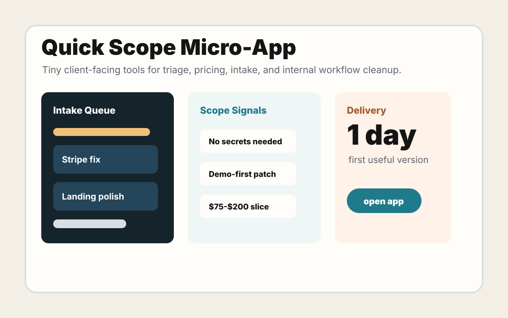

Quick Scope sample
A tiny app that turns vague rescue work into a priced, guarded first step.
A fixed first slice for messy web/app work: triage the broken path, keep secrets out of chat, and ship one useful repair or tiny internal workflow.

A tiny app that turns vague rescue work into a priced, guarded first step.
Map the stack, broken flow, dependency risk, obvious security/payment concerns, and the safest first fix.
Patch one failing path, rough mobile layout, admin action, form flow, API glue point, or deploy blocker.
Build a simple internal screen for intake, status, estimates, triage, exports, or handoff notes.
Pass
No env files needed upfront.
Pass
Dependency preflight before installs.
Pass
Readable summary of what changed.
Pass
Small scope before bigger work.
DM u/Ill_Engineering_6347 on Reddit with the stack, the broken path, screenshots if useful, and what a useful first demo or fix should prove.